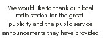
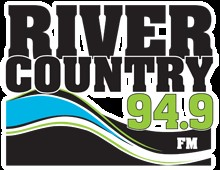

Can I Get a Tax Receipt?
Yes. In order to make tax receipts available to our sponsors, we request that donations be made through one of the following recipients:
Donate through one of these Churches:
- First Baptist Church
- St. James Cathedral
Please specify that your donation is for the "Peace River Community Soup Kitchen".
The Churches will be responsible for allocating the funds to the Soup Kitchen to purchase food & supplies and cover operating costs.
When Are We Open?
Monday's
Wednesday's &
Friday's
12:00 - 1:00pm


By sponsoring a guest of the Peace River Community Soup Kitchen you can reach out to feed someone who needs your help.
A few free meals can make a world of difference to someone living on a fixed income. If we all do our small part, together we can ensure that no one goes hungry in our area.
How Can I Make A Difference?
A little goes a long way...
$20 - feeds one person
for one week
$80 - feeds one person
for one month
$150 - feeds 25 people
for one meal
$250 - feeds one person
for three months
Consider a monthly donation of any amount.
What can you do to help ensure that no one goes hungry in our community?
How Will Your Support Be Recognized?
We like to recognize our sponsors with a note of thanks in an advertisement in our local newspaper/Facebook page/website.
If you do not want your support publicly recognized, inform us at time of donation.
Remit Your Pledge
Please forward your cheque to one of the above churches or...
MAIL TO:
10010 - 88 Street
Peace River, AB
T8S 1N8
Attention: Tanin Behnke
Please specify that your donation is for the Peace River Community Soup Kitchen.
Location Address:
St. James Anglican Cathedral
9709 - 98 Avenue
Peace River, AB T8S 1J3
Phone: (780) 624-2743
What Kind of Donations are Needed?
Our greatest necessity is for a broad base of sponsors to supply the funds needed to purchase the food, supplies and cover operating costs.
We can also accept donations of coffee, tea, juice crystals, crackers, cookies in unopened original packages, napkins, paper towel, sandwich baggies, cleaning supplies and the like.
At this time we are not able to accept donations of unpackaged or premade food as provincial health codes prevent us from offering meals not prepared under food safe guidelines in an approved kitchen.
|   |
 prsoupkitchen.org
prsoupkitchen.org